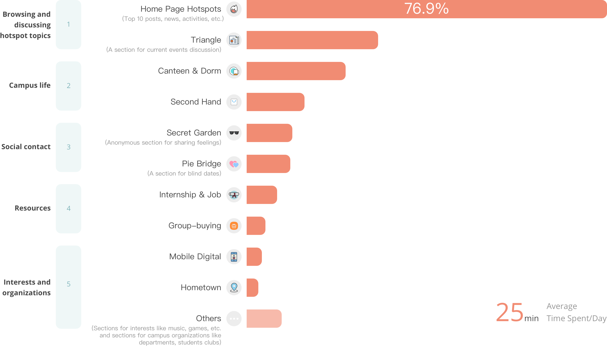

This is an important project I completed when I worked as a UX designer at the Youth Research Center of Peking University. Bei Da Wei Ming BBS (BDWM BBS or PKU BBS) is the official online forum of Peking University. It provides a platform for students to exchange ideas about academics, social issues, campus lives, etc.. However, the old version of the website did not meet the users’ needs anymore. For the 15th anniversary of the forum, we collaborated to redesign the forum.
BACKGROUND
Users Were Declining Dramatically
Launched in 2000, BDWM served as an online bulletin on campus, and then became the official online forum of Peking University. While it had such a big title, the design and usability of it were terrible.
Due to limited resources, BDWM did not keep its pace with technological changes and improve its user experience. The old website could not satisfy new users’ needs. As a result, the users are declining dramatically.
Luckily, at the 15th anniversary of BDWM, we had a chance to collaborate and redesign the website for our forum.
RESEARCH AND SYNTHESIS
Understanding the Key Information to Successful Redesign
In order to better understand the problems, I conducted user interviews and questionnaire survey. I wanted to have a clear picture of how users used the website, what they cared about, what annoyed them and how we could improve.
Users' preferences are highly concentrated
There are over 900 sections on BDWM, but I found that users' preferences were highly concentrated. These findings helped me to decide what to display on the website, especially in pages full of information such as the home page.

What users expect about the new website
After interviews, I synthesized users' expectations about the new version. All we need to do was to narrow the gap between what we had and their expectations. This helped us to have clear goals in mind when redesigning the website.
THE DESIGN
A More Beautiful and Friendly Interface
As our target users are most college students, I wanted an interface more lively and refreshing. Also, since reading and writing are core functions of the forum, the interface should be relatively clean.
Browse Useful Information You Care About
The top of the home page features 6 sections consisted of information the students want to see the most. We want the students to get information, like what‘s going on and what people are discussing on campus when they first enter the forum.
See What's News in Each Zones
Sections (boards) are grouped into 13 zones. Each zone consists of sections related to similar topics. After scrolling down, students can see hotspots posts in each zone. These posts are not popular enough to go to the Top 10 but still provide useful information.
Have a Nice Reading Experience
This page is where users can read a certain thread post and see others' comments. We want to create an intuitive reading experience by utilizing friendly layout design and adding convenient features.
Expressing Your Opinion Anytime Easily
In the old website, if a user wanted to reply someone, he had to jump to another page to edit his content and then go back to the post. We separated the function of reply into 'quick reply' (only text is allowed, yet frequently used) and 'full edit mode'. That way we increased their efficiency in discussing.
Find Resources and Information Easily
This page is where users can see the posts list in a specific section. We add features like filters and searching to help users find the topic they are interested in or resources they need.
RESULT
140% Increase in Daily Active Users
After the new website was launched in July 2016, there was a 140% increase in average daily active users. BDWM also opened special registration channels for freshmen of 2016 to foster more growth of users.
Thanks for reading!